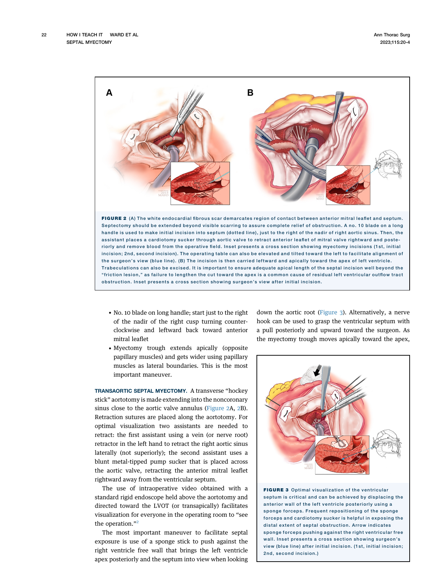
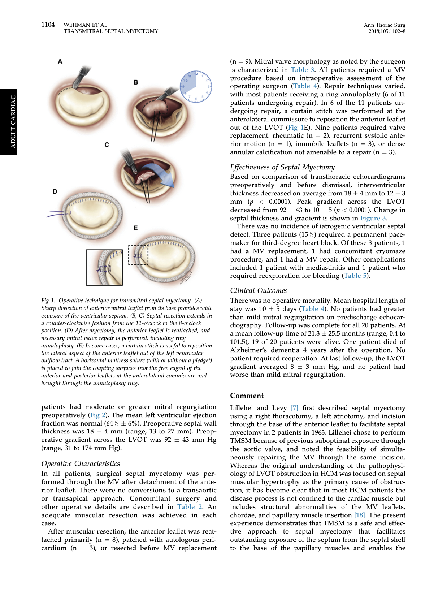
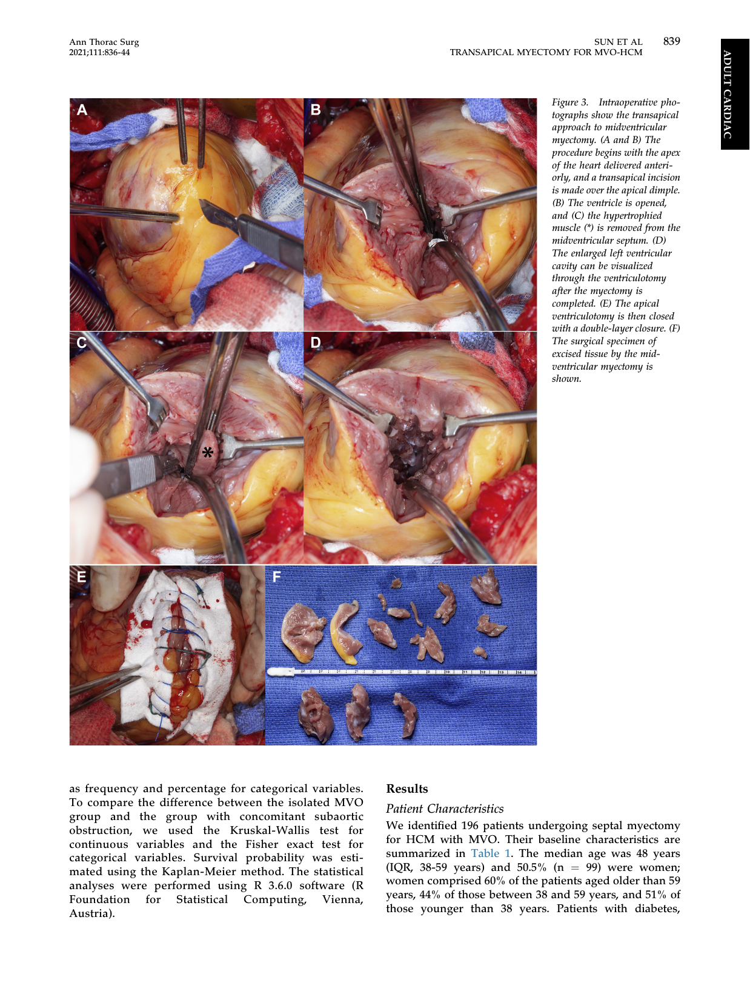
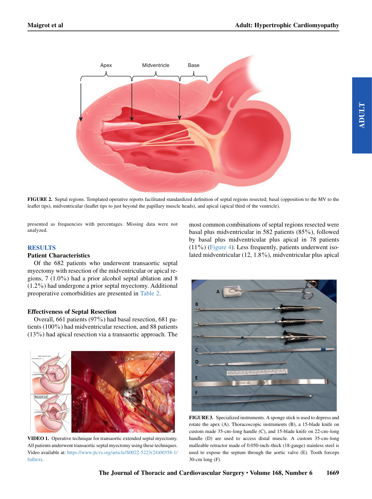
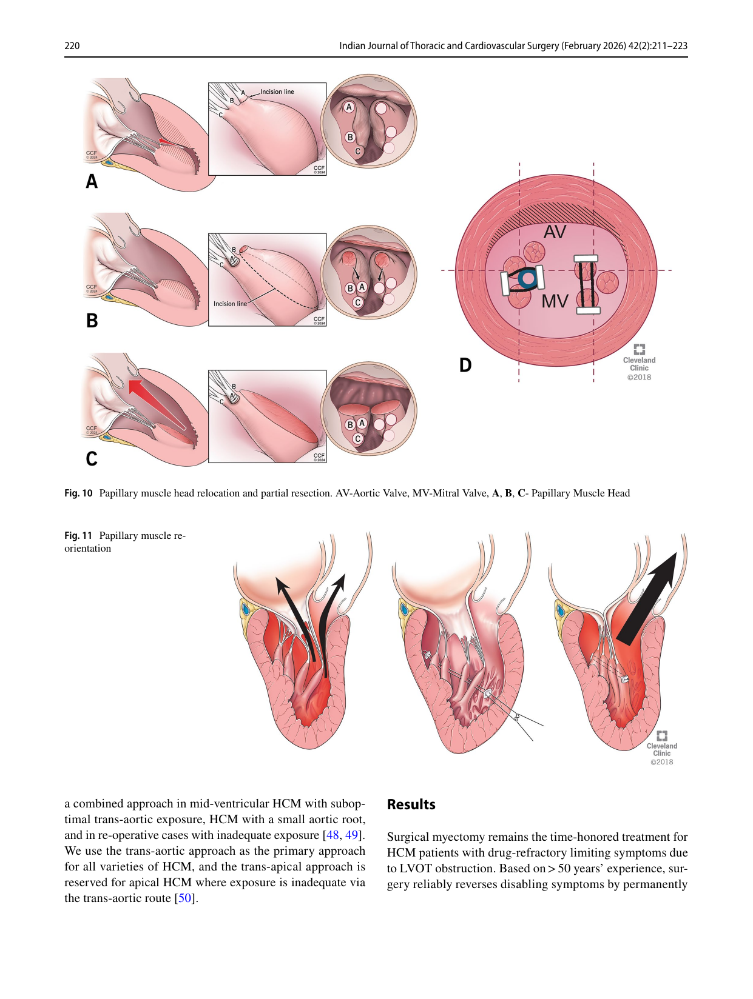

HOCM Septal Myectomy ― 統合レビュー (本文ベース)
作成日: 2026-05-27 根拠: 25論文の本文精読 (Tier 1 ガイドライン 4本 + Mayo系総説 5本 + Cleveland系総説 2本 + How-to/Morphology 2本 + アプローチ別 7本 + Volume-Outcome/ASA/MV/補助 5本) 読者想定: 心臓血管外科医
Executive Summary (結論先出し)
Gold standard は extended transaortic septal myectomy ― Schaff 2024 Mayo総説, Ananthanarayanan 2026 Cleveland総説, Maron 2022 10施設Expert Panel で完全一致。10施設・約11,000例の周術期死亡率 0.6%、Cleveland単独 (n=1,549, 2005-2015) で0.38% (Hodges 2019)。
2024 AHA/ACC ガイドライン (Ommen 2024 Circulation, JACC版) と 2023 ESC ガイドライン (Arbelo 2023) でSRT は Class I、特に小児・併施病変ありの成人ではmyectomy が ASA より推奨 (Class I)。両ガイドラインとも "experienced HCM center" 実施 を強調 (Class I-LOE C / B-NR)。
Mayo Clinic vs Cleveland Clinic の哲学的差異 (mid/apical へのアプローチ):
- Mayo: transaortic では mid/apical の exposure に限界。Combined transaortic + transapical を推奨 (Hang 2018 n=86, Sun 2021 n=196)
- Cleveland: 専用器具・detailed imaging・解剖理解があれば transaortic 単独で mid (85%) と apical (11%) 到達可能 (Maigrot 2024 n=940 のうち682 (73%) でmid/apical resection, mortality 0.1%)
- 両者ともoutcome は <1% 死亡で同等 ― 経験豊富施設なら手技選択は二次的
Volume-outcome は不可逆的に確立 (Holst 2022 STS db n=5,935)。<1例/年施設は死亡 OR 5.4 / VSD OR 9.3 / MVR OR 9.4 (vs ≥10例/年)。にもかかわらず Medicare データでは依然 70% が low-volume center で実施 (Mentias 2023) ― 紹介の重要性をユーザー (心臓血管外科医) は再認識すべき。
SM vs ASA: 短期 mortality は同等だが、10年全死亡 26.1% (ASA) vs 8.2% (SM)、調整後 HR 1.68 (Cui 2022 JACC n=3,859)。Medicare >65歳 cohort でも 2年以降 SM 有利 (HR 0.72, Mentias 2023)。
Emerging technique: 中国Tongji の Transapical Beating-Heart Septal Myectomy (TA-BSM) (Fang 2025 n=418, Qamar/Wei/Schaff 2025 Mayo×Tongji 200 vs 200)。30日死亡 0.2-0.5%、ICU滞在短縮・AF減少・輸血減のメリットあり一方で新規LBBB 63.8% と高頻度。日本ではまだ普及していない。
1. 歴史的背景 ― 60年の発展
Maron 2022 10施設Expert Panel と Ananthanarayanan 2026 Cleveland総説 の歴史記述に基づく。
| 年 | 出来事 | 出典 |
|---|---|---|
| 1957 | Brock が septal endocardium の "contact lesion" を剖検で記載 | Cleveland総説 |
| 1958 | Cleland (London) が初の myectomy 成功 (1963発表) | Cleveland総説 |
| 1960s | Morrow (NIH) が "Morrow operation" 確立 ― 2本平行切開を transverse myotomy で連結。本人がHCM罹患・診断はBraunwald | Maron 2022, Cleveland総説 |
| 1990s | Messmer (Aachen) が "extended septal myectomy" 提唱 ― 基部だけでなく心尖方向への遠位拡張が鍵 | Schaff 2024 |
| 1995 | Sigwart が alcohol septal ablation (ASA) 開始 ― myectomy への challenger となる | Maron 2022 |
| 1992-94 | Dual-chamber pacing の流行 (placebo effect で消滅) | Maron 2022 |
| 2010s | Cleveland (Swistel "RPR" を取り込み) で 三段階resection 標準化 | Cleveland総説 |
| 2023 | Wei (Wuhan Tongji) が transapical beating-heart SM (TA-BSM) をJACCに発表 | Fang 2023 |
| 2024 | AHA/ACC ガイドライン改訂 | Ommen 2024 |
| 2025 | Mayo × Tongji が TA-BSM vs transaortic 直接比較 をJTCVS Openに発表 | Qamar 2025 |
重要な観察: Maron 2022は「ヨーロッパで一旦 myectomy 文化が失われた (Germany / Switzerland / Netherlands / 米国 Stanford・BWH・Vanderbilt・NIH も縮小)」と警告。"a lost generation of surgeons with myectomy expertise" を危惧している。
2. 国際ガイドライン推奨 (Class I は青、Class IIa は黄、Class IIb は灰として読む)
2-1. 2024 AHA/ACC/AMSSM/HRS/PACES/SCMR Guideline (Ommen 2024 Circulation)
「Recommendations for Invasive Treatment of Symptomatic Patients With Obstructive HCM」より:
| COR | LOE | 推奨内容 |
|---|---|---|
| I | B-NR | 1. GDMT 後も症候性obstructive HCM に対しては、experienced HCM center での SRT が LVOTO 解除のために推奨 |
| I | B-NR | 2. 併施病変 (anomalous papillary muscle, markedly elongated AML, intrinsic MV disease, multivessel CAD, valvular AS) のある症候性obstructive HCM では、experienced HCM center での surgical myectomy が推奨 |
| I | C-LD | 3. 手術禁忌・高リスク (severe comorbidities, 高齢) の成人で experienced HCM center での ASA が推奨 |
| IIb | B-NR | 4. NYHA II の早期手術は (a) 進行性肺高血圧 (b) 症候性AF + 左房拡大 (c) 運動負荷で機能低下 (d) 安静時gradient >100 mmHg の若年 のいずれかがあれば comprehensive HCM center で reasonable |
| IIb | C-LD | 5. shared decision-making 後、SRT が GDMT escalation の代替として may be considered |
| III: Harm | C-LD | 6. 無症候かつ運動能力正常なら SRT は推奨しない |
| III: Harm | B-NR | 7. SRT が選択肢である症候性obstructive HCMに対して、LVOTO解除のみを目的とした MVR を行ってはならない |
General eligibility for SRT (脚注より厳格化):
- Clinical: 最大薬物療法後も NYHA III/IV または運動誘発失神等、ADL/QOLを阻害する症状
- Hemodynamic: 安静時または provoked LVOT gradient ≥50 mm Hg + 中隔肥大 + SAM
- Anatomic: 安全・効果的に切除できるだけの前部中隔厚 (執刀医判断)
Synopsis (重要): "Transaortic extended septal myectomy (ESM) is an appropriate treatment for the broadest range of patients and allows gradient relief at any level within the ventricle, with a mortality rate of <1% and clinical success >90% to 95%." ― つまりAHA/ACC は ESM を "全レベルのobstruction を解除可能" と明記 している。
Ommen 2024 JACC版 は内容同一。
2-2. 2023 ESC Guidelines on Cardiomyopathies (Arbelo 2023)
「Recommendation Table 20 ― Septal Reduction Therapy」より:
| Class | LOE | 推奨内容 |
|---|---|---|
| I | C | SRT は HCM管理のmultidisciplinary teamの一部としての experienced operator により実施 |
| I | B | LVOT gradient ≥50 mmHg + NYHA III/IV (despite maximally tolerated medical therapy) には SRT 推奨 |
| I | C | 小児 + 他病変 (例: MV) を要する成人 には ASA ではなく septal myectomy 推奨 |
| IIa | C | LVOT gradient ≥50 mmHg + 運動誘発失神 (despite optimal medical therapy) には SRT を考慮 |
| IIa | C | LVOT gradient ≥50 mmHg + 中等度以上MR (SRT単独で解除困難) には MV repair or replacement を考慮 |
| IIa | C | Isolated myectomy 後の中等度以上MR には MV repair を考慮 |
| IIb | C | NYHA II (medical refractory) + gradient ≥50 mmHg + (SAM関連中等度以上MR or AF or LA拡大) には専門センターでの SRT may be considered |
| IIb | C | Isolated myectomy 後の中等度以上MR には MVR may be considered |
| IIb | C | Surgical AF ablation / LAA occlusion may be considered if 症候性AF を併発 |
ESC特有の言及: "The most commonly performed surgical procedure is ventricular septal myectomy (rectangular trough below AV)... abolishes/reduces LVOT gradient in >90% ... long-term symptomatic benefit in >80% with survival comparable to general population." Mid-cavity obstruction には "the standard myectomy can be extended distally into the mid-ventricle... however, data on efficacy and long-term outcomes of this approach are limited." ― つまりESCはmid-ventricular拡張に対しMayo/Cleveland両者よりやや慎重。
2-3. ガイドライン比較表
| 項目 | 2024 AHA/ACC | 2023 ESC |
|---|---|---|
| SRT 適応 gradient閾値 | ≥50 mmHg (rest/provoked) + 症候性 + GDMT後 | ≥50 mmHg (rest/provoked) + NYHA III/IV |
| Experienced center 要件 | Class I (脚注で明文化) | Class I (LOE C) |
| 早期手術 (NYHA II) | Class IIb (4条件のいずれか) | Class IIb (3条件のいずれか) |
| MVR (LVOTO目的のみ) | Class III: Harm | 中等度以上MR残存時のみ IIa/IIb |
| ASA優先する場面 | 高齢・併存疾患・手術禁忌 (Class I) | 同左 (本文内記述) |
| 小児/併施病変ありの成人 | Surgery 推奨 (Class I) | ASAではなくSurgery (Class I) |
| Apical/midventricular への記述 | Transapical or combined を明示的に許容 | Distally extended myectomyを記載するが long-term data limited とコメント |
3. 標準術式 ― Extended Transaortic Septal Myectomy
3-1. 解剖学的理解 (Robich 2023 のZone分類)
Robich/Schaff/Chen 2023 JTCVS はMayo-Tufts合同のexpert opinionで、3 zoneによる septal 分類 を提案 (Maigrot 2024 Clevelandも同分類を採用):
| Zone | 位置 | 臨床的意義 |
|---|---|---|
| Zone 1 | 大動脈弁直下〜僧帽弁前尖 chordal insertion tip | 基部"knuckle" or basal bulge。古典的subaortic obstruction |
| Zone 2 | AML chordae tipから乳頭筋頭まで | Mid-ventricular。SM全体の<10%で isolated zone 2 |
| Zone 3 | 心尖部 + distal septum | Apical hypertrophy |
| All 3 | 全層拡張 | 稀だが obstructive HCM で見られる |
時計法による orientation:
- 右冠動脈洞 nadir = 12時
- 右-無冠 commissure = 2時
- 左-無冠 commissure = 5時
- AML A1 = 8時 / A3 = 4時
「Mayoの "zone 1/2/3" は Cleveland Maigrot 2024 の "basal/midventricular/apical" 区分と一致する」と論文中で明示されており、両施設の専門用語が統一されつつある。
3-2. Mayo流 transaortic 手技 (Schaff 2024 + Ward 2023 "How I Teach It")

図 1 Mayo流 extended transaortic septal myectomy の exposure と切除範囲。非冠状洞経由のaortotomy + cardiotomy sucker による AML 押下、右冠状cusp nadir直下からのMessmer式切開、apex方向への遠位拡張 (length が outcome を決める)。出典: Ward 2023 Ann Thorac Surg
主要ポイント:
- Median sternotomy + 低位斜め切開 aortotomy を非冠状洞基部まで延長
- Cardiotomy sucker を大動脈弁経由でAMLを下方へ押下 ― separate vent不要、AMLの保護兼ねる
- 非冠状cusp が exposure を妨げれば 5-0 polypropylene の traction suture (Arantius結節free edge)
- No.10 blade で右冠状洞 nadir のすぐ右に上向き切開、AMLまで左方へ延ばす (8-10 mm depth)
- 遠位 (apex方向) への切除延長が成否を決める ― Mayo 2024総説の図2は "residual gradient の最頻原因は深さ・右方ではなくlength不足" と強調
- 切除筋量 3-12 g が adequate
- TEE + 直接針穿刺による LV-Ao gradient測定 で >10-15 mm Hg ならCPB再開して追加切除
- 切除はMessmer式extendedで、Morrow原法より subaortic area をwiderに、distal exposureを改善
Ward 2023 "How I Teach It" (Mayo + Emoryで現在は教育担当) の特記事項:
- "Extended" = midventricular levelで progressively wider、broad resection opposite papillary muscles、left-right commissureとAML間 (posterolateral free wall) へleftward
- 軽度肥厚 (12-15 mm) でも experienced centerなら良好な結果 ― thickness は contraindicationではない
- 術中TEEで gradient + SAM + MV機能を全例評価
3-3. Cleveland流 transaortic 手技 (Ananthanarayanan 2026 ― Smedira系統)
"Three-step resection" が標準化された Cleveland 法:
- Step 1: 右冠状cusp nadir 直下に 2本の平行切開 (10mm間隔、5mm深さ、15-20mm長 apex方向) → #15 blade で連結し長方形ブロック切除
- Step 2: 切開を 右fibrous trigone 方向へ延長 (membranous septumよりは下、infero-septum はantero-septumより薄い ことに注意)
- Step 3: 第1切開の前縁を 左fibrous trigone 上へ延長してさらに長方形切除 (左冠状cuspに近づけても伝導路損傷リスク低い)
特徴:
- 切除した長方形ブロックを 方向を保ってタオル上に並べ、切除前の中隔を再構築 ― 解剖を可視化
- Intracardiac ultrasound (Toshiba Aplio i900) で中隔厚を術中評価
- 安静時 + isoproterenol誘発下の TEE で provoked peak gradient <30 mmHg + MR ≤2+ を retreat基準
- 自院 2005-2015 の 1,549例:
- 術前 peak LVOT gradient 63±4.6 → 術後 15±8.9 mmHg
- 平均 AoCC time 28±10 min (isolated SM)
- 平均切除筋量 8.1±3.7 g
- 新規PPM 4.2%、医原性VSD 2例 (0.13%)、operative mortality 0.38%
- 平均在院日数 6日、大多数が術後NYHA I
3-4. 切除筋量の目安比較
| 文献 | Center | n | 平均切除量 |
|---|---|---|---|
| Schaff 2024総説 | Mayo | (text指針) | 3-12 g (adequate) |
| Hodges 2019 | Cleveland | 1,559 | MV介入なし 8.8±3.8 g, MV介入あり 6.2±3.5 g |
| Ananthanarayanan 2026 | Cleveland | 1,549 | 8.1±3.7 g |
| Maigrot 2024 (mid/apical含む) | Cleveland | 682 | 10 g (median, IQR 7-15) |
4. アプローチ別の比較 (本レビューの中核)
4-1. 経大動脈 (Transaortic) ― standard for all subaortic
- 適応: 全 obstructive HCM の第一選択。Cleveland は mid/apical も含めて第一選択 (Ananthanarayanan 2026)。
- 利点: median sternotomy で広い視野、AVへの familiar approach、全レベルへ理論上到達可
- 欠点: aortic annulus が小さい (小児・小柄成人) と exposure 不十分。Mayo は mid/apical では transapical 併用を推奨
- 死亡率: <1% (high-volume center)
4-2. 経僧帽弁 (Transmitral)
Wehman & Gammie 2018 (University of Maryland) PMID 29453001:

図 2 Transmitral septal myectomy. (A) 左房経由でAMLを露出、(B-C) AML を annulus から detach、(D) extended myectomy、(E) "curtain stitch" による anterolateral commissure閉鎖でAML外側をLVOT外へ移動。出典: Wehman 2018 Ann Thorac Surg
- n=20 (70%女性、平均63歳)。術前 LVOT gradient 92±43 mm Hg
- 左心耳経由でAMLを annulus からdetach → extended myectomy → AML再縫着 + concomitant MV修復/置換 (修復11、置換9)
- "curtain stitch" (modified anterolateral commissural closure) でAML外側を LVOT 外へ移動
- 術後LVOT gradient 10±5 mm Hg、operative mortality 0%、22±25か月FUで再手術なし、MR mild以下
- 著者主張: "transmitral approach は preferred approach となり得る" ― 中隔・弁下構造のpanoramic view + 同時にMV病変対処可能 + 教育的視野
- 欠点: AML detachment/reattachment による distortion・suture dehiscence の理論的risk (Schaff 2024 のコメント)
AnandKumar/Gillinov/Smedira/Wierup 2020 J Card Surg (Cleveland):
- Robotic trans-mitral septal myectomy + papillary muscle reorientation (DaVinci, 30° camera up)
- 適応: 軽度から中等度basal septal hypertrophy + 主たるLVOT obstruction原因がMV (hypermobile PM, elongated AML, primary MR)
- Cleveland のmitral repair経験を生かして、MICS septal myectomyを robotic で実現
- 技術論文 (n非明示)
位置づけ: Mayo/Clevelandの mainline は依然 transaortic。Transmitral は (a) intrinsic MV disease要対処、(b) 軽度septum、(c) MICS/robotic 適応症例 で選択肢となる。
4-3. 経心尖 (Transapical, on-pump) ― Mayo 流の mid/apical アプローチ
Sun/Schaff/Nishimura/Geske/Dearani/Ommen 2021 Ann Thorac Surg:

図 3 Mayo transapical approach for midventricular HCM. (A-B) Apical dimple経由で transapical incision、(C-D) 拡張した左室腔から hypertrophic muscle を切除、(E) Apical ventriculotomyを double-layer closure で閉鎖、(F) 切除筋標本。出典: Sun 2021 Ann Thorac Surg
- Mayo 1997-2018, n=196 midventricular myectomy
- 基準: MV gradient >30 mm Hg + 症候性 (NYHA III/IV 80%)
- 80例 isolated MVO のうち 63 (79%) は isolated transapical
- 116例で subaortic + midcavity を併発 → うち 108 (93%) で combined transaortic + transapical
- 中央値peak gradient: 術前 48 (IQR 23-77) → 術前 dismissal 8 (IQR 0-19) mm Hg
- FU 中央値 2.9年、推定 1/5/10年生存 99%/98%/90%
- late complication attributable to transapical incision はゼロ ― 重要な safety message
Hang/Schaff/Ommen/Dearani/Nishimura 2018 JTCVS:
- Mayo n=86 ― combined transaortic + transapical ★ Mayo flagship paper
- 適応: long-segment septal hypertrophy + (MVO 59例/cavitary obliteration 12例/両者15例)
- 中央値 prebypass intracavitary gradient 85 mm Hg → postbypass 4 mm Hg
- 術後dismissal LVOT 0 mm Hg, MV 0 mm Hg (中央値)
- 中央値 XCL 35 min, perfusion 48.5 min
- 30日 / 1年生存 ともに 95% (2例の早期死亡)
- FU可能42例中41例がNYHA I/II
- 著者主張 (Mayoの公式立場): "inadequate length of septal resection が persistent symptoms の主因 ― complex long-segment では transaortic単独では不十分で、combined approach がgold standard"
4-4. Cleveland の対立立場: Transaortic で mid/apical も achievable ★★最重要対比
Maigrot/Weiss/Steely/Firth/Moros/Blackstone/Smedira 2024 JTCVS:

図 4 Cleveland approach for mid/apical via transaortic. 上 (Fig 2): Septal regions (Apex / Midventricular / Basal) と template切除 ― MV pillar をfree wall方向に移動 することで apex までの exposure 改善。下 (Fig 3): 「specialized instruments」と論文では呼ばれるが実体は長尺カスタム柄の通常器具 ― (A) apex を押す sponge stick、(B) 普通の thoracoscopic 器具、(C-D) 15-blade knife を 35cm/22cm の長柄 に custom mount、(E-F) 35cm長の malleable retractor (0.050-inch / 18-gauge ステンレス) + intraoperative video link。出典: Maigrot 2024 JTCVS
- Cleveland 2018-2023, n=940 transaortic SM のうち 682 (73%) で mid/apical resection (basal以遠への切除)
- 582 (85%) basal + midventricular、78 (11%) basal + midventricular + apical
- 切除筋量 中央値 10 g (IQR 7-15)
- 術前 intraventricular gradient 102±41 → 術後 16±10 mm Hg、625 (96%) で gradient ≤36 mm Hg
- iatrogenic mitral/aortic valve injury ゼロ
- 新規PPM 38例 (5.6%) ― そのうち preop伝導正常者は8 (1.2%)
- Operative mortality 1例 (0.1%) ― intraoperative VSD後
- 著者主張 (Cleveland公式立場): "A transaortic approach to the apex is an extension of a procedure familiar to most surgeons. With specialized instruments, this approach can be safely and effectively used for midventricular and apical septal myectomy." Insufficient initial resection を将来の再手術の主因と捉え、Mayoと同様 "length が成否を決める" との認識を共有 ― ただし length を出す手段が transaortic 単独で十分 と主張。
- 装備 (注: 論文中 "specialized instruments" と表現されるが新規開発デバイスではない): 35cm長の柄を custom 製作した 15-blade knife + 30cm長 tooth forceps + 35cm 長 malleable retractor (0.050 inch / 18 gauge ステンレス) + 既存の thoracoscopic 器具 + 高出力LED headlight + apex を押す sponge stick。本質は「通常器具の長尺カスタム化 + 照明 + 解剖理解 + 経験」であり、Wei グループの Wei-Xin-Tan BMD (真空吸引-切断 multi-component) のような専用デバイスとは別物
両派の食い違いの本質:
- どちらも "extended length resection" の必要性は一致
- Mayo: transaortic は exposure に物理的限界 → transapical で補完
- Cleveland: 専用器具 + 経験で transaortic 単独で apical到達可、追加切開のmorbidity (transapical incisionによる)を避けられる
- 客観的outcome は両者とも mortality <1% で同等 (Hang 2018 30日95%生存 と Maigrot 2024 mortality 0.1%)
- 注: Mayo の Sun 2021 (n=196) は "transapical incision attributable late complication ゼロ" を強調 ― つまり"追加切開のmorbidity" 反論に対する Mayo の防御エビデンス
4-5. Transapical Beating-Heart Septal Myectomy (TA-BSM) ― 中国Wei流, Emerging
Fang/Chen/Liu/Li/Wei et al 2025 Circ CV Interv:
- 中国 Tongji Hospital (Wuhan), 2023年1月-2024年1月、n=418 (learning curve 後 cohort)
- 左mini-thoracotomy + beating-heart 専用デバイス + リアルタイムTEE誘導
- デバイス: bullet-headed resection tube + tubular blade + paraxial puncture needle + multiporous tunnel ― negative pressure で中隔を捕捉、3-6回の resection
- 術前 max LVOT gradient 中央値 85 → 3-6か月FUで 19 mm Hg
- MR ≤2+: 47.7% → 98.8%
- Procedural success 91.1% (resting <30 mmHg + provoked <50 mmHg + MR ≤2+ at 3-6 months)
- 重大有害事象: LV apical tear 0.7%, iatrogenic MV injury 0.7%, 新規PPM 2.4%, 一過性虚血性脳卒中 0.5%
- 30日死亡 0.2% (1例)、1年生存 98.7%
- 著者主張: "real-time echo guidance + tailored approach で適切な中隔切除を達成。"
Qamar/Li/Geske/Fang/Schaff/Wei 2025 JTCVS Open (Mayo × Tongji) ★直接比較★:
- n=200 TA-BSM (Tongji) vs n=200 transaortic on-pump (Mayo)
- LVOT gradient 中央値:
- TA-BSM: 102 → 15 mm Hg
- Transaortic: 88 → 12 mm Hg
- 両群とも P<.001 内部差、群間有意差なし
- TA-BSM 有利: ICU滞在短縮 (24h vs 26h, P<.001), AF減少 (9.5% vs 30.0%, P<.001), 輸血減 (8.0% vs 22.0%, P<.001)
- Transaortic 有利: 新規LBBB 37.0% vs 63.8% (P<.001), 在院日数 中央値 5日 vs 11日 (P<.001, institutional protocol差)
- 30日死亡: TA-BSM 0.5% (1例) vs Transaortic 1.0% (2例), P=.562
- 著者主張: "TA-BSMは comparable hemodynamic outcome + ICU recovery/transfusion/AF面で有利。Less invasive alternative for selected oHCM patients。長期成績はrandomized trialが必要。"
実践的含意:
- TA-BSMは日本ではまだ専用デバイスが普及していない (Wei グループの商用device、規制上の問題)
- 新規LBBB 63.8% は注意すべき ― 長期PPMリスクとの関係は未確立
- 在院日数 11日 はTongjiのprotocolで institutional bias、術自体の問題ではない
- 国際的に追随する施設が現れるかは今後の randomized trial 次第
4-6. アプローチ別 まとめ表
| アプローチ | 推奨適応 | 主たる施設 | 30日死亡 | 主たる利点 | 主たる欠点 |
|---|---|---|---|---|---|
| Transaortic (standard) | 全obstructive HCM (Cleveland: all) | Mayo, Cleveland, Tufts, Fuwai 他 | 0.1-0.6% | Familiar, 全レベル到達可 (Cleveland argues) | 小aortic annulusでexposure不十分 (Mayo argues for mid/apical) |
| Transmitral | 軽度septum + 主たる原因がMV、MICS適応 | Univ Maryland (Wehman), Cleveland (robotic) | 0% (Wehman n=20) | Panoramic view, MV同時対処, 教育的 | AML distortion/dehiscence理論risk |
| Transapical (on-pump) | Midventricular obstruction, apical HCM, 複雑long-segment | Mayo (>200例) | 1-2% (combined: 5%) | Mid/apical exposureに優れる | 追加切開, late complicationsはMayoシリーズではゼロ |
| Combined transaortic + transapical | Long-segment + MVO + cavitary obliteration | Mayo (n=86 Hang 2018) | 5% (95%生存) | 確実な gradient relief | 最も侵襲大、cross-clamp長 (~35 min) |
| TA-BSM (beating-heart) | 適切な解剖の選択患者 (現状中国主導) | Tongji (n=418), Mayo比較 | 0.2-0.5% | 小開胸, CPB回避, AF/輸血減 | LBBB 63.8%, 専用デバイス必須, 日本未普及 |
5. Mayo Clinic vs Cleveland Clinic ― 直接比較 ★ 本レビューの核心
5-1. 数値の比較
| 項目 | Mayo Clinic | Cleveland Clinic | 出典 |
|---|---|---|---|
| 累積myectomy症例数 | >3,000 (1993-2016) → 推定 4,000+ (現在) | >4,000 (30年) | Kotkar 2017, Ananthanarayanan 2026 |
| 直近大規模シリーズ | (Mayo isolated SM死亡 <1%, Schaff 2024より) | n=1,549 (2005-2015), Hodges 2019; n=940 (2018-23) Maigrot 2024 | Hodges 2019, Maigrot 2024 |
| Operative mortality (isolated SM) | <1% | 0.38% (Hodges), 0.1% (Maigrot 2018-23 mid/apical) | 同上 |
| Iatrogenic VSD | <0.3% (Kotkar) | 0.13% (Hodges, 1559中2例) | 同上 |
| 新規PPM率 | 2% (Kotkar) | 4.2% (Ananthanarayanan), 5.6% (Maigrot mid/apical) | 同上 |
| MV介入率 | ~2% (一系列 n>2000, MV intrinsic disease以外) | MV repair 28.7% (Holst STS db全国)、Cleveland 1,559中 MV intervention あり 522 (33.5%) + MVR 92 (5.9%) | Schaff 2024, Hodges 2019 |
| 切除筋量 | 3-12 g (target) | 8.1±3.7 g (isolated), 10 g (mid/apical) | 同上 |
Note: 厳密な"同等期間・同方法"の比較ではないが、両施設ともisolated SM mortality <1%、>4000例の経験、両ガイドラインの推奨をclassして満たすことに変わりない。
5-2. 哲学的差異 ― 5つの軸
| 軸 | Mayo Clinic | Cleveland Clinic |
|---|---|---|
| Mid/apical へのアプローチ | Transaortic では exposure 限界 → combined transaortic + transapical を積極推奨。Sun 2021 で transapical の late safety を立証 | Transaortic 単独で mid 85% / apical 11% achievable (Maigrot 2024)。専用器具・解剖理解で克服 |
| MV/subvalvular 介入の積極性 | Adequate myectomy が MR の85%を解消 ― MV介入は ~2% (intrinsic disease除く) (Schaff 2024) | MV介入を積極的に併施: AML shortening 16%, chordae resection 9.8%, PM resection 7.2%, PM reorientation 7.5% (Hodges 2019) |
| 新技術への姿勢 | Wei グループとTA-BSM 直接比較trial を共同実施 (Qamar 2025) ― TA-BSMを評価対象に。Apical myectomyも自前で開発 | 三段階resection 標準化、robotic transmitral 開発、MV virtual planning |
| 教育論文の Style | Ward 2023 "How I Teach It" + Robich 2023 zone分類 ― 明示的かつ standardized | 教科書的review (Ananthanarayanan 2026) + 三段階法を図解 |
| Anatomy nomenclature | Schaff & Juarez-Casso の zone 1/2/3 (Robich 2023 で確立) | Maigrot 2024 で basal/midventricular/apical を採用、Mayo zone と "closely related" と明記 ― 両施設で語彙統一傾向 |
5-3. 両派の合致点 (重要)
- Extended length resection が outcome を決める ― Morrow → Messmer → 現代extended への進化を両者が共有
- Mortality <1% は high-volume center で実現可能 (両者の自前データで実証)
- MV介入の判断は患者ごと ― Cleveland は積極派だが、intrinsic MV diseaseなしの軽度症例ではMayoも介入を否定しない
- ASA より SM が長期生存で有利 (両者の共著 Cui 2022 PMID 35483751)
- Volume-Outcome relationshipは両者が共著 Holst 2022 PMID 35779600
5-4. ユーザー (心臓血管外科医) への実践的含意
- "Mayo vs Cleveland どちらが正しいか" は false dichotomy ― どちらも mortality <1% で同等
- 手技選択は (a) 自施設の経験 (b) 患者の解剖 (c) 利用可能なdevice/imaging で決まる
- Mid/apicalで unfamiliar なら transapical 併用が無難 (Mayo方針) ― Cleveland流の transaortic単独はexperience必要
- 日本国内では症例数が10例/年以上の施設は限定的 ― volume-outcome の議論から集約化が望ましい
- 国際学会発表時の比較: 両派の主張をニュートラルに引用すれば polarization を避けられる
6. Volume-Outcome の根拠
6-1. STS Adult Cardiac Surgery Database 解析 (Holst/Schaff/Smedira/Badhwar/Dearani 2022)
Pivotal study ― Mayo + Cleveland + WV + Columbia + Northwestern の合同研究:
- 2012-2019, n=5,935 / 481施設 / 933術者
- 平均施設volume: <1〜138例/年と極端な分布
- 全体: early mortality 2.6%, VSD 1.9%, complete heart block 9.0%, MV repair 28.7%, MVR 17.1%
Multivariable解析 (<1 例/年施設 vs >10例/年): | Outcome | Odds Ratio | 95% CI | P | |---|---|---|---| | Early mortality | 5.4 | 3.0-9.9 | <0.001 | | Iatrogenic VSD | 9.3 | 4.2-20.4 | <0.001 | | Complete heart block | 2.0 | 1.5-2.7 | <0.001 | | MV replacement (vs repair) | 9.4 | 7.5-11.8 | <0.001 |
Schaff 2024 総説の Figure 4 引用 (Schaff 2024):
10例/年施設: mortality <1%, VSD 0.4%
- 1-5例/年施設: mortality 3.7%, VSD 2.6%
- "The impact of lower case volume remains significantly associated with mortality in adjusted analysis"
6-2. Medicare実地データ (Mentias/Smedira/Desai 2023 JACC)
- Medicare >65歳, 2013-2019, n=5,679 SRT (SM 3,680 + ASA 1,999)
- Landmark解析: 2年以降は SM が ASA より低死亡 (HR 0.72, 95%CI 0.60-0.87, P<0.001)
- 70% の SRT が low-volume center で実施されている ― ガイドライン推奨と実地のギャップ
- High-volume centerは short/long-term mortality 両方で有利
6-3. ガイドライン推奨との整合性
- 2024 AHA/ACC は "experienced HCM centers" を Class I で繰り返し言及 ― Table 5 で具体的target (mortality <1%, success >90%, 重症合併症 <5%等) を明示
- 2023 ESC も同様に "experienced operators working as part of multidisciplinary team" を Class I-LOE C
- 両ガイドラインの "Comprehensive HCM Center" 基準を満たす施設は世界で限定的 ― 米国・欧州でも10数施設、日本では数施設
7. SM vs ASA ― 長期生存の決定的差
7-1. Cui 2022 JACC ★ Landmark study (Cui/Schaff/Wang/Maron/Rastegar/Eleid/Dearani/Kimmelstiel/Maron/Nishimura/Ommen/Maron 2022)
- Mayo + Fuwai + Tufts の3施設合同、n=3,859 (ASA 585 + SM 3,274)
- ASA群: 有意に高齢 (中央値 63.0歳 vs 53.7歳), septum薄い (19.0 vs 20.0 mm), 併存疾患多い
- Early death: ASA 0.7% vs SM 0.3%
- 中央値FU 6.4年 (IQR 3.6-10.2)
- 10年全死亡: ASA 26.1% vs SM 8.2%
- 年齢・性・併存調整後でも HR 1.68 (95%CI 1.29-2.19, P<0.001) で ASA > SM
→ "centers with sufficient experience, septal myectomy is preferred to relieve LVOTO" (Schaff 2024)
7-2. Mentias 2023 JACC ― Medicare >65歳 cohort で再確認
詳細は §6-2参照。高齢者でも 2年以降 SM が ASA より生存有利 (HR 0.72)。これは "ASA は手術禁忌例向け" との通念に対するreal-world validationだが、紹介の問題 (low-volume centerでの実施 70%) を浮き彫りにする。
7-3. ガイドラインの位置づけ
- 2024 AHA/ACC: SRT 1st-line は SM、ASA は "surgery is contraindicated or risk is unacceptable" の場合に Class I (LOE C-LD)
- 2023 ESC: 小児 + 併施病変ありの成人で ASA ではなく SM を Class I (LOE C)
- ASA を選ぶべき症例: 高齢, 重症併存疾患, septum 16-30 mm, 適切なseptal perforator解剖, 開心術 unwilling
8. Mitral Valve / 弁下構造の併施
8-1. Mayo の立場 ― "Adequate myectomy で MR の85%が解消"
- "In one large series of >2000 patients undergoing septal myectomy, additional MV interventions were performed in only 2% of patients without intrinsic MV disease"
- MV replacement は rheumatic / severe myxomatous / degenerative で repair不能例に限定
- 例外: 中隔が異常に薄く iatrogenic VSDのrisk高い場合、 mechanical prosthesis preferred
8-2. Cleveland の立場 ― "積極的に MV/PM 介入"
- 1,559例中 522 (33.5%) で MV/subvalvular intervention併施
- 内訳: anterior leaflet shortening 16%, chordae tendineae resection 9.8%, PM resection 7.2%, PM reorientation 7.5%
- MVR 92 (5.9%)
- MV介入群は septum 薄い (18±0.4 vs 22±0.5 mm) + 切除筋量少ない (6.2±3.5 vs 8.8±3.8 g)
- Operative mortality 0.38% 全体 (MV介入ありでも outcome 良好)
Ananthanarayanan 2026 Cleveland総説 の手技記載:
- Papillary muscle relocation/partial resection (Fig 10)
- Papillary muscle re-orientation (Cleveland独自手技, Fig 11) ― 異所性PM headを posterior less-mobile headに縫着して LVOT 外へ pull
- "current era では MVR は intrinsic MV disease not suitable for repair に限定"

図 5 Cleveland独自の papillary muscle 操作。上 (Fig 10): PM head の partial resection と relocation (A, B, C は PM head)。下 (Fig 11): PM re-orientation ― 異所性に LVOT 側を向いた PM head を posterior less-mobile head に縫着し直して LVOT 外へ pull。SAM 機序の subvalvular 病態を解剖学的に正す Cleveland 流の積極的MV介入の象徴的手技。出典: Ananthanarayanan 2026 Indian J Thorac CV Surg
8-3. Residual MR の重要性 (Qamar/Schaff/Geske/Dearani/Giudicessi/Ommen 2025)
- Mayo 2001-2024, n=3,061 全体, propensity match 398 vs 398
- 術直後 moderate以上 residual MR: 13.9%
- Late progression (15年で moderate-severe MR): residual MR群 48.0% vs 11.9% (P=.002)
- MV reintervention 15年: residual MR群 14.0% vs 3.9% (P=.007, 3倍)
- Overall survival は差なし (P=.48)
- 解釈: 術直後の residual moderate以上 MR は 未認識の mild intrinsic MV disease を示唆 ― 単に SAM 解除では不十分なケースがある
含意: Clevelandの "積極的MV介入" は理論的にこのlate progression を予防する可能性。ただし Mayo seriesのoverall survival は良好 ― どの程度の積極介入が必要かは個別判断。
8-4. ガイドライン (2024 AHA/ACC, 2023 ESC)
両ガイドラインとも "LVOTO 解除のみを目的とした MVR は Class III: Harm" (AHA/ACC) / MV repair を考慮 Class IIa (ESC, isolated myectomy後の中等度以上MR時)。Mayo (control myectomy first) と Cleveland (active MV intervention) のどちらも guideline-compliant range にある。
9. 術前計画 ― Imaging Adjuncts
9-1. CMR (両ガイドライン Class I)
- 中隔分布、fibrosis (gadolinium uptake), MV/subvalvular の形態評価
- 2024 AHA/ACC で全例recommended (Class I)
9-2. Exercise Doppler / Provocative catheterization
- 安静時 gradient <30 mmHg でも 50%は provoked obstruction (Schaff 2024)
- Outcome は resting / provoked で同等 (Cui 2022)
9-3. Virtual Septal Myectomy (Takayama 2019 Columbia JTCVS)
- 3D CT再構成で術前にidealとconservativeのVMを作成
- Retrospective n=15, surgical resection volume 6.2±1.7 cm3、VM予測 12.8 (ideal) / 6.7 (conservative) cm3, R=0.44-0.56
- Hospital mortality 0%, 術後LVOT gradient 13 mm Hg
- Subjectiveな procedure を objective化 する試み ― 普及には課題
9-4. Intracardiac ultrasound (Cleveland), TEE (両者必須)
- Cleveland: Toshiba Aplio i900 intracardiac US で術中中隔厚 (Ananthanarayanan 2026)
- 両者とも術中TEE + 直接針穿刺 LV-Ao gradient
- Cleveland: Isoproterenol provocation で provoked peak <30 mmHg + MR ≤2+ を retreat基準
10. 日本の文脈
10-1. 日本の transapical myectomy 経験
- PMID 35291875 (Shimizu/Takanashi/Isobe 2022 Asian CV Thorac Ann): 榊原記念のtransapical myectomy n=59 (key_papers_abstracts.txt にabstact有、本文未DL)
- PMID 39212331 (Ito/Kato 2024 MMCTS): 名古屋赤十字 endoscopic transmitral myectomy with longitudinal AML valvotomy (key_papers_abstracts.txt にabstract有)
- PMID 33271581 (Matsuno 2020 Kyobu Geka): transmitral症例報告 (邦文)
10-2. 日本での集約化議論
- 国内 high-volume HCM center は数施設に限定
- Volume-Outcome の論理から、症候性obstructive HCM の myectomy 適応症例は >10例/年 を実施している施設へ紹介すべき
- Maron 2022 の "lost generation" 警告は日本にも当てはまる ― 専門医育成・症例集約が学会レベルの課題
10-3. TA-BSM の日本展開
- 中国Wei グループの専用デバイスは日本未承認 (現時点)
- Mayo × Tongji の比較trial (Qamar 2025) で先進国 evidence が出始めたところ
- 日本で導入される場合はWei グループとのcollaboration + 規制対応が必要
11. 結論 ― ユーザーの質問への直接回答
Q1. 現在の標準術式は?
→ Extended transaortic septal myectomy (Messmer extended, Mayo refinement)。Morrow原法に対し遠位 (apex方向) への長さの拡張が成否を決める。
Q2. アプローチ別の推奨は?
| シナリオ | 推奨アプローチ | 根拠 |
|---|---|---|
| 古典的subaortic obstruction + SAM | Transaortic | 両施設一致, 両ガイドライン |
| Mid-ventricular obstruction (isolated) | Mayo: Transapical, Cleveland: Transaortic単独 | Sun 2021 vs Maigrot 2024 |
| Apical HCM + 拡張型 | Apical myectomy (transapical) | Schaff 2024 |
| Long-segment + 複雑形態 | Combined transaortic + transapical (Mayo) or Extended transaortic (Cleveland) | Hang 2018 vs Maigrot 2024 |
| Intrinsic MV disease + LVOTO | Transaortic SM + MV repair または Transmitral SM | Schaff 2024, Wehman 2018 |
| 軽度septum + 主たる原因MV | Transmitral / Robotic + PM reorientation | AnandKumar 2020 |
| 手術禁忌・高齢併存 | ASA | 両ガイドライン Class I |
| Selected anatomy, less-invasive希望 | TA-BSM (中国主導, emerging) | Fang 2025, Qamar 2025 |
Q3. Cleveland と Mayo はコンセンサスありますか?
→ 基本コンセンサスあり、手技選択で哲学差 (詳細は §5)
- 一致: Extended transaortic SM が gold standard、mortality <1%、volume matters、SM > ASA in long-term survival
- 対立: mid/apicalへのアプローチ (Mayo: combined transapical / Cleveland: transaortic単独で可)、MV介入の積極性 (Mayo: 控えめ / Cleveland: 積極)
- 両派ともoutcome同等 (mortality <1%) ― 経験豊富施設での実施が決定因子
Q4. Volume requirement は?
→ 少なくとも10例/年, できれば comprehensive HCM center (Mayo, Cleveland, Tufts, Fuwai, Toronto General等の10施設). <1例/年施設は死亡率5.4倍 (Holst 2022)。
12. 引用論文一覧 (本レビュー本文で引用、PMID昇順)
| PMID | 著者 | 年 | 誌 | |
|---|---|---|---|---|
| 28912182 | Nishimura, Seggewiss, Schaff | 2017 | Circ Res | |
| 28944173 | Kotkar, Said, Dearani, Schaff | 2017 | Ann Cardiothorac Surg | |
| 29153286 | Hang, Schaff, Ommen, Dearani, Nishimura | 2018 | JTCVS | |
| 29453001 | Wehman, Gammie et al | 2018 | Ann Thorac Surg | |
| 30578058 | Takayama, Ginns et al | 2019 | JTCVS | |
| 30782406 | Hodges, Smedira et al | 2019 | JTCVS | |
| 32740992 | AnandKumar, Gillinov, Smedira, Wierup | 2020 | J Card Surg | |
| 32771468 | Sun, Schaff, Nishimura, Geske, Dearani, Ommen | 2021 | Ann Thorac Surg | |
| 33215931 | Ommen et al | 2020 | Circulation | |
| 35483751 | Cui, Schaff, Wang, Maron, Rastegar, Ommen, Maron | 2022 | JACC | |
| 35779600 | Holst, Schaff, Smedira, Badhwar, Dearani, Takayama, McCarthy | 2022 | Ann Thorac Surg | |
| 35965115 | Maron, Dearani, Smedira, Schaff, Wang, Rastegar et al (10施設) | 2022 | Am J Cardiol | |
| 36089072 | Ward, Schaff, Dearani | 2023 | Ann Thorac Surg | |
| 36628660 | Robich, Schaff, Chen et al | 2023 | JTCVS | |
| 36631204 | Mentias, Smedira, Desai et al | 2023 | JACC | |
| 37622657 | Arbelo, Kaski et al (ESC Task Force) | 2023 | Eur Heart J | |
| 37914148 | Schaff, Wei | 2024 | Ann Thorac Surg | |
| 38368037 | Schaff, Juarez-Casso | 2024 | Am J Cardiol | |
| 38692479 | Maigrot, Weiss, Steely, Blackstone, Smedira | 2024 | JTCVS | |
| 38718139 | Ommen, Dearani et al (AHA/ACC) | 2024 | Circulation | |
| 38727647 | Ommen, Dearani et al (AHA/ACC) | 2024 | JACC | |
| 40314635 | Qamar, Schaff, Geske, Dearani, Giudicessi, Ommen | 2025 | JTCVS | |
| 40315478 | Fang, Chen, Liu, Li, Wei et al | 2025 | Circ CV Interv | |
| 41473065 | Qamar, Li, Geske, Fang, Schaff, Wei | 2025 | JTCVS Open | |
| 41613496 | Ananthanarayanan, Smedira et al | 2026 | Indian J Thorac CV Surg |
付録: 用語集
- HCM = Hypertrophic cardiomyopathy
- oHCM = Obstructive HCM
- LVOT / LVOTO = Left ventricular outflow tract / obstruction
- SAM = Systolic anterior motion (of the mitral valve)
- MVO = Midventricular obstruction
- SM = Septal myectomy
- ESM = Extended septal myectomy
- SRT = Septal reduction therapy (SM または ASA の総称)
- ASA = Alcohol septal ablation
- TA-BSM = Transapical beating-heart septal myectomy
- PPM = Permanent pacemaker
- PM = Papillary muscle
- AML = Anterior mitral leaflet
- RPR = Resection / Plication / Release (Swistel operation)
- AHA/ACC = American Heart Association / American College of Cardiology
- ESC = European Society of Cardiology
- STS db = Society of Thoracic Surgeons Adult Cardiac Surgery Database
- Cardiac Magnetic Resonance = CMR
- NYHA = New York Heart Association functional class
- GDMT = Guideline-directed medical therapy